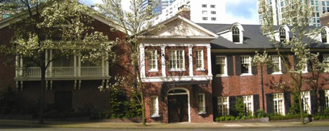

<ui-accordion close-others="oneAtATime">
  <section class="events accom accom-2 add-padding-top">
    <div class="container">
        <div class="row">
          <div class="col-sm-12 text-center">
            <h2 style="margin-bottom: 10px">The Wedding</h2>
          </div>
        </div>
        <div class="row">
          <div style="text-align: center" class="lodging-wrapper">
              <a href=""></a>
          </div>
        </div>
        <div class="row">
          <div class="col-sm-12 text-center lodging-wrapper">
            <h5 style="margin-bottom: 5px;">CEREMONY & RECEPTION</h5>
            <p class="address" style="margin-bottom: 5px;"><b>The Sunset Club</b></p>
            <p class="address" style="margin-bottom: 0px;">Saturday, December 29th 2018</p>
            <p class="address date">4:30PM - 11:30PM</p>
            <a href="https://www.google.com/maps/dir//1021+University+St,+Seattle,+WA+98101/@47.6110152,-122.3971506,12z/data=!4m9!4m8!1m0!1m5!1m1!1s0x54906aca0c0e4c47:0xa9674acc9e5b2421!2m2!1d-122.327111!2d47.6110365!3e0" target="_blank"><p class="address" style="margin-bottom: 5px;"> 1021 University St</p>
            <p class="address">Seattle, WA 98101</p></a>
            <p class="text-center">Parking lot is located on the corner of Boren Ave & Seneca St <br />Attire: Festive cocktail attire <br />Wear your dancing shoes!</p>
          </div>
        </div>
        <hr>
        <div class="row">
          <div class="col-sm-12 text-center">
            <h2 style="margin-bottom: 10px; margin-top: 10px">Other Events</h2>
          </div>
        </div>
        <div class="row">
          <div class="col-sm-12 text-center logding-wrapper events-wrapper">
            <h5>TEA CEREMONY</h5>
            <p class="address"><b>Mt. Baker Community Club</b></p>
            <p class="address">Friday, December 28th 2018</p>
            <p class="address date">12:00PM - 2:30PM</p>
            <a href="https://www.google.com/maps/place/2811+Mt+Rainier+Dr+S,+Seattle,+WA+98144/@47.5778874,-122.2900507,17z/data=!3m1!4b1!4m5!3m4!1s0x54906a6746e50df3:0x7bbc4b9eeb5f6060!8m2!3d47.5778838!4d-122.2878567"
                       target="_blank"><p class="address"> 2811 Mt Rainier Dr S</p>
              <p class="address" style="margin-bottom: 10px;">Seattle, WA 98144</p></a>
            <p class="text-center">**The Tea Ceremony is reserved for family and members of the wedding party**
              <br />Attire: Semi-formal
            </p>
            <p class="text-center">You may be wondering what is a ‘Tea Ceremony’?</p>
            <p class="text-center">In traditional Vietnamese culture, the tea ceremony is the formal wedding which typically takes place in the bride’s parents home. Tea ceremonies are where couples exchange rings and pay respect to their parents, families and ancestors. It is also when both the bride’s and groom’s families are introduced to each other. Tea is served to both sides of the family, one at a time, and the parents offer advice for a happy marriage. The couple is presented with gold jewelry (for good fortune) and red envelopes (to help start their lives together). We’re pretty sure that’s how it goes, but we may update this page as our knowledge grows.</p>
            <p style="margin: 15px auto 10px auto" class="text-center">Schedule</p>
            <p class="text-center">12:00PM: Tea ceremony starts. Limited street parking available, please carpool.</p>
            <p class="text-center">The groom and his family will come to the house carrying five trays, covered in red cloth. Inside these trays are gifts that include: liquor, tea, a roast pig, cakes, fruit, etc. The Nguyen family will meet the Saur family to accept the gifts and invite them inside to the "alter". The bride will meet the groom at the alter and then the serving of tea will begin. First, tea is served to each set of parents. Then each nuclear family will be served tea and they will give their blessing to the new couple. The order follows eldest to youngest traditionally.</p>
            <p class="text-center">1:00PM: Luncheon to follow. This is an opportunity for both families to enjoy an informal meal together for the first time as one family. </p>
            <h5>REHEARSAL/WELCOME DINNER</h5>
            <p class="address"><b>Queen Anne Beerhall</b></p>
            <p class="address">Friday, December 28th 2018</p>
            <p class="address date">6:00PM</p>
            <a href="https://www.google.com/maps/place/203+W+Thomas+St,+Seattle,+WA+98119/@47.6208066,-122.361898,17z/data=!3m1!4b1!4m5!3m4!1s0x5490155b4c235b9d:0x1e7319d2f1438b74!8m2!3d47.6207997!4d-122.3597024" target="
            "><p class="address">203 W Thomas St</p>
            <p class="address date">Seattle, WA 98118</p></a>
            <p class="text-center">**The Rehearsal/Welcome dinner is reserved for family, out-of-town guests and members of the wedding party**</p>
            <p class="text-center">
              Parking: Free street parking and pay-to-park lot next to restaurant
            </p>
          </div>
        </div>
      </div>
    </div>
  </section>
</ui-accordion>
